~8 Space~
8/18/2025
Preparing to use the Space Tool
Randomize Movement of Vertices
Option from the Last Operation Dialog Box
The Blender Smooth Vertices Tool
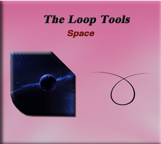
What is the Space Tool?
The space tool in the Loop tool section of Blender is a tool, in which you can use to try and smoothly space out the vertices. You will find that this tool is the last tool in the Loop tool’s little collection.
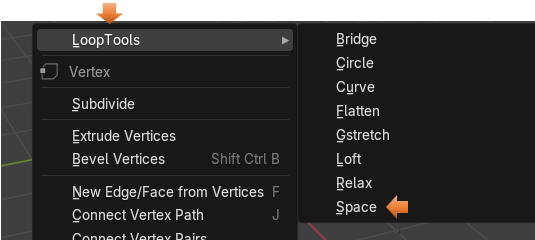
Preparing to use the Space Tool
I am going to use a plane for this, which I added using the Add menu in Object mode.
I turned it 90° in the X axis, by changing the objects Rotation properties.
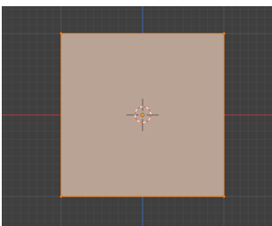
Then I subdivided it 10 times after bringing it into Edit mode
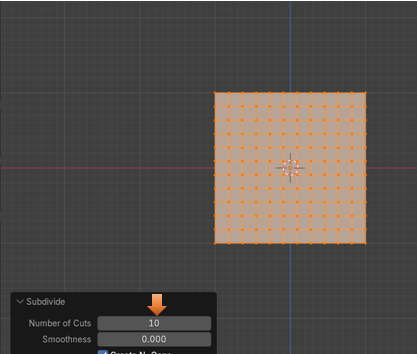
Randomize Movement of Vertices
I want to randomize the movement of the vertices on this mesh surface. Select the entire object by hitting A on the keyboard.
Mesh-Transform-Randomize
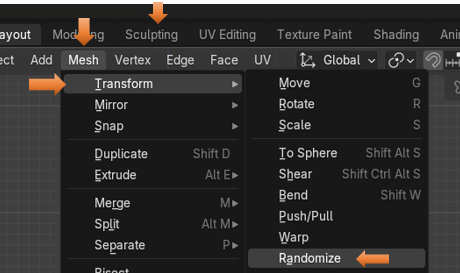
This looks pretty good, for a random mess. We could mess it up a bit more manually, by tugging on a few individual vertices, but for me to start, this is fine.
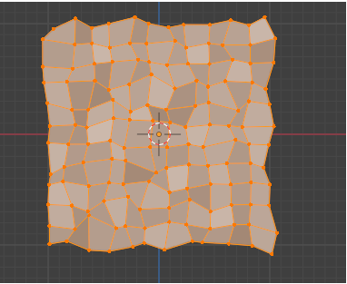
How to Use the Space Tool
Now with all of the vertices selected we can right click and select Space from the drop-down, context menu of Loop tools.
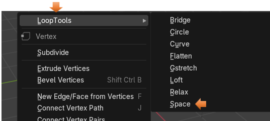
Option from the Last Operation Dialog Box
We can see if we move the Influence on the Last operation dialog box that things will try and space themselves out a little bit. But this tool, could use a lot of help to actually be of any use.
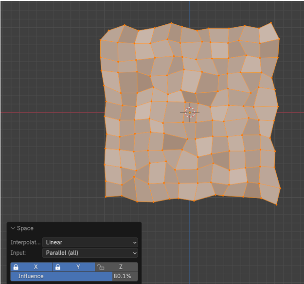
Even at full strength influence, we only get this.
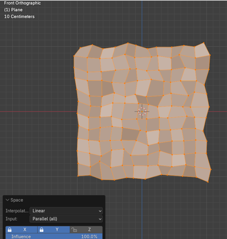
The Blender Smooth Vertices Tool
Let’s try that Smooth Vertices tool that is offered from Blender itself. We learned about this tool in our last tutorial that was supposed to be on Loop Tool’s relax tool, but we found that Blender offered this Smooth tool, which is a better tool, with better results.
Go to the Top Menu and hit:
Vertex – Smooth Vertices
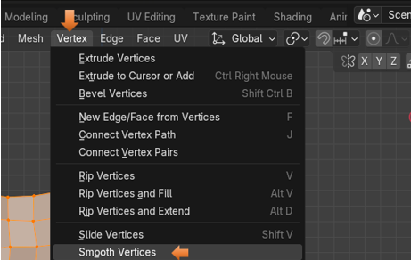
Right off the bat, we get a much better result, and as you can see, the Smoothing Option below, is only set at half way.
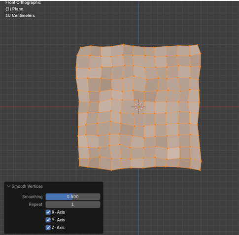
Now if we crank it up all of the way, it does seem to take it past the desired smoothness.
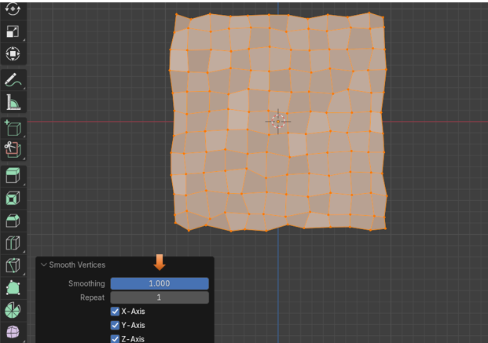
Let’s try upping the Repeat option, and see what we get. As we can see, from the example below, It spaces the vertices a bit better, with exception to the edges; but then we also find that we are losing quite a bit of mass with our object. Our object’s size is smaller.
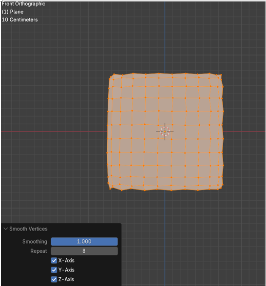
You can attempt these two different methods for yourself, and see which one that you like better. As far as I am concerned, I still think the Blender’s own method for doing this does an immensely better job of handling things.